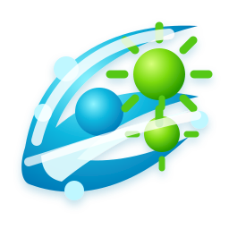

Definer bruken
Beskriv miljø, berørte materialer, rengjøring og driftsbetingelser.

VitaCoatTeknisk vurdering · Prosjektgrunnlag
En strukturert vei fra bruksområde og materialvalg til teknisk gjennomgang og dokumentert beslutningsgrunnlag.
Arbeidsflyt
Avklar prosjektets rammer først. Koble deretter hvert dokument til riktig prøve, metode og begrensning før en teknisk konklusjon tas.
Beskriv miljø, berørte materialer, rengjøring og driftsbetingelser.
Registrer rapport, utsteder, prøvenavn, dato og opprinnelig sponsor.
Sammenlign dokumenterte testbetingelser med den konkrete bruken.
Sett prosjektspesifikke kriterier for teknisk gjennomgang og videre beslutning.
Dokumentasjon
Et dokument får mening når testet prøve, metode, betingelser og kilde er tydelige. Denne layouten viser plasseringen av informasjonen som må kontrolleres.
| Felt | Registrering |
|---|---|
| Testet prøve | Kontrolleres mot originalrapport |
| Metode og dato | Registreres per rapport |
| Testbetingelser | Kontaktid, temperatur, belastning og øvrige vilkår |
| Proveniens | Utsteder, sponsor og publiseringsrettigheter |
Avgrensning
Historisk dokumentasjon skal knyttes til den eksakte prøven den beskriver. Den fastslår ikke i seg selv egenskaper for en nåværende formulering.
Neste steg
Samle bruksområde, substrat, rengjøringsrutine og ønsket dokumentasjon for en teknisk gjennomgang.
Technical review · Project scope
A structured path from application context and material selection to technical review and a documented decision.
Workflow
Define the project conditions first. Then connect each document to the correct test sample, method and limitations before drawing a technical conclusion.
Describe the environment, materials, cleaning routine and operating conditions.
Record the report, issuer, sample identity, date and original sponsor.
Compare documented test conditions with the proposed use case.
Set project-specific criteria for technical review and any further decision.
Documentation
A document is useful when its tested sample, method, conditions and source are clear. This layout shows where information needing verification belongs.
| Field | Record |
|---|---|
| Tested sample | Verify against the original report |
| Method and date | Record for each report |
| Test conditions | Contact time, temperature, load and other terms |
| Provenance | Issuer, sponsor and publication rights |
Boundary
Historical evidence must stay linked to the exact sample it describes. It does not by itself establish properties of a current formulation.
Next step
Collect the use case, substrate, cleaning routine and required documentation for a technical review.